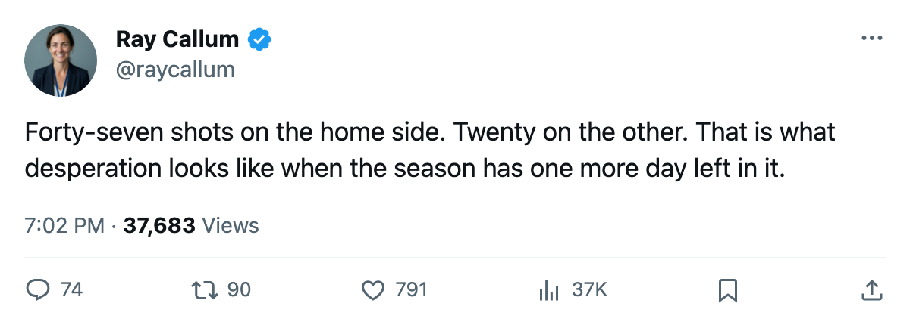

RECAP: Islanders 3, Toronto 1 -- 47 shots, 3 goals, and one more night
New York scored once in each of the first three games. The fourth was different.
 Ray CallumSenior correspondent · Home Ice Network
Ray CallumSenior correspondent · Home Ice Network
The  New York Islanders scored 1 in each of the first three games of this series and lost all three. On Wednesday at home they scored 3, took 47 shots against
New York Islanders scored 1 in each of the first three games of this series and lost all three. On Wednesday at home they scored 3, took 47 shots against  Toronto Maple Leafs's 20, and bought one more date with the season.
Toronto Maple Leafs's 20, and bought one more date with the season.
Toronto held the shot edge in each of the first three games and outscored New York 10-3. In Game 4 the Islanders emptied the tank and outshot them 47 to 20.
 Chris Simon73 has 3 goals and 0 assists through 4 games. He is the only Islander with multiple goals this spring. The top four in the New York scoring column, Simon (3 points),
Chris Simon73 has 3 goals and 0 assists through 4 games. He is the only Islander with multiple goals this spring. The top four in the New York scoring column, Simon (3 points),  Adrian Aucoin80 (2),
Adrian Aucoin80 (2),  Mike Peca86 (2) and
Mike Peca86 (2) and  Mark Parrish83 (1), have 8 points between them. Toronto's top four,
Mark Parrish83 (1), have 8 points between them. Toronto's top four,  Marian Gaborik98 (7),
Marian Gaborik98 (7),  Gary Roberts88 (6),
Gary Roberts88 (6),  Mats Sundin91 (4) and
Mats Sundin91 (4) and  Barret Jackman86 (2), have 19.
Barret Jackman86 (2), have 19.
 Roberto Luongo94 has a 1.51 goals-against and .963 save percentage on the spring. He faced 47 and allowed 3.
Roberto Luongo94 has a 1.51 goals-against and .963 save percentage on the spring. He faced 47 and allowed 3.  Rick DiPietro84 sits at 2.75 and .866. Luongo has the better numbers, but the 19-8 top-four scoring gap is what's driving this series.
Rick DiPietro84 sits at 2.75 and .866. Luongo has the better numbers, but the 19-8 top-four scoring gap is what's driving this series.
New York finished 30-38-4 for 84 points, the lowest remaining seed in the Eastern Conference, with 50 injury spells and 320 days lost across the season. And they're in Game 5.
The series moves to Toronto on April 16. The Maple Leafs need one more win. The Islanders need two on the road.
